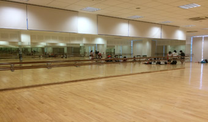

Facilities
| Aesthetics Block | |
|  | |
| With 12 performing arts CCAs, the need to find dedicated spaces for students to express themselves freely becomes more pressing as each performing arts groups expanded into the junior high wing. The new aesthetics block adds on to the current number of rooms specialised for the arts, with an additional 3 full mirror-walled dance studios, 3 classrooms for classroom teaching, 4 sound proof music rooms, proper storerooms for the instrumental groups and the 4 different dance groups, a foyer that welcomes visitors or opens to be a convenient space to practice dance moves or even instrumental parts and a large open roof top that is easily available for students to use for any purpose. NJC is also one of the few schools in Singapore that has its own black box theatre. | |
| Art Centre | |
 |
The Art Centre is the heart of the Art Elective Programme and boasts of a multi-media resource room, a 3-dimensional work / pottery / sculpture studio, a drawing and painting studio, a pottery kiln room, a casting room and a photography darkroom. The multi-media resource room is equipped with advanced multi-media equipment that is capable of animation, graphic design, video-editing and multi-media authoring. Find out more about our Art Elective Programme. |
| Amphitheatre | |
 |
|
| A sheltered open-air amphitheatre that is suitable for cultural performances, gatherings or simply to relax. It serves as an outdoor venue for concerts and performances. | |
| Science Block | |
| We have five Physics laboratories, four Chemistry laboratories, two Biology laboratories and two Integrated Sciences laboratories. All laboratories are equipped with LCD projectors and wireless LAN. | |
| Sigma Labs | |
| The Sigma Labs (South Zone Science & Technology Centre) is set up to promote interest in science and research amongst students and teachers, particularly in the area of biomedical sciences. It is equipped with sophisticated instruments and equipment for research and scientific investigation. The centre is the platform for collaboration with Institutes of Higher Learning and Research Institutes & Centres. In addition, it is ideal for sharing among teachers and peer mentoring among students. | |
| Lecture Theatres | |
| We have two large 500-seater lecture theatres (LT1 and LT5) with stage facilities. In addition, there are three smaller lecture theatres (LT2, LT3 and LT4). All lecture theatres are fully equipped. | |
| Hall | |
| The fully air-conditioned multi-purpose hall can be used for any type of function or event. The size of four badminton courts, the hall is frequently used for concerts, orchestra and dance practices and badminton training. | |
| Sanctuary | |
| This is an air-conditioned discussion area, equipped with cafe-styled tables and chairs that is suitable for staff meetings, discussions and training. | |
| Atrium | |
|
A dome shaped space welcomes our students, staff, parents and the public to the college with our Exuberance sculpture designed by our Alumni. Our four paired values are prominently displayed in the atrium, constantly reminding us the importance of these NJCian values. In this space, it houses the large TV panel where student videos and announcements are displayed. Townhall sessions are conducted at this very place too!! |
|
| Plaza | |
| Located in the heart of the NJC campus is a beautiful landscaped garden that proudly features a fountain and a pond teeming with fishes. Stone tables and chairs offer an ideal location for students to unwind and relax. | |
| Canteen | |
| Located above the Sports Complex, the college canteen boasts of twelve stalls offering a wide variety of food like chicken rice, curry mixed vegetable rice, roti prata, laksa, shrimp dumpling noodles, yong tau fu, spaghetti, fish and chips, sandwiches, ice kachang, to name a few. A small stage area with a piano offers an avenue for students to showcase their musical talent to the lunch time crowd. | |
| Library | |
| The library has a seating capacity of about three hundred students. It has a wide range of books and titles that are updated regularly. Within the library, there are three special discussion rooms for students to have group meetings and discussions. In another corner is the instructions room for conducting learning workshops. Laptops and digital video cameras may be borrowed from the library counter. | |
| BYTZ | |
| This is a state-of-the-art IT Resource Room with more than 30 Pentium IV workstations for students to carry out IT research projects. In one corner of the Bytes, there is a rest area for students to relax after a day of lectures and tutorials.
|
|
| I&E Hub | |
| Setup in collaboration with EDB, this room offers resources on Innovation and Enterprise including games, books and magazines. The room is ideal for projects and team discussions. Ideas Generation workshops are available on request. Find out more about our I&E programme.
|
|
| Student Lounge | |
| Accessible to all students during college hours, this fully air-conditioned students’ lounge is the place for students to unwind and recharge. Board games may be borrowed from Student Councillors on duty. In addition, the lounge is equipped with a pool table and a foosball table.
|
|
| PE / CCA Block | |
| Students can borrow sports items from the PE teachers who are all stationed at the PE block. Most of the fitness equipment and the nearby weight rooms are available to all students and staff. Sports CCAs take personal care of their own store in this vicinity. | |
| Field | |
| The NJC synthetic field is available to all students and staff for recreational or CCA activities such as soccer, frisbee, softball, or touch rugby. | |
| Weights Room | |
| A fully air conditioned gym with weights training machines, treadmills and sound system. | |
| Tennis Courts | |
| We have 3 tennis courts available for booking for recreational or CCA purposes. | |
| Indoor Sports Hall | |
| The Indoor Sports Hall (ISH) was progressively phased in as part National Junior College’s vision to provide a holistic, well-rounded education to all students in 2012. With greater flexibility to schedule Physical Education (PE) lessons without having to worry about the weather, and give more students the opportunity to participate in sports and games, the ISH can accommodate a basketball court superimposed with four badminton courts, a volleyball court and a netball court. In addition, it has an extension of about 30% increase in court space as compared to a standardized sports hall which allows for cohort based briefing and activities as an alternative to the existing Hall and lecture facilities in the college. Our distinguished alumnus donated a 3 by 2 meter state of the art mounted electronic scoreboard. | |
| Indoor Gymnasium | |
| A fully air conditioned multi-purpose venue which can be used for any type of function or event such as table tennis and examinations. | |